原文连接:https://www.cnblogs.com/wadhf/p/11908653.html
1.内容介绍
深入解析tp5.1与laravel 中Facade底层原理实现
1. 什么是Facade
2. 为什么需要有什么好处
3. Facade实现原理
4. 功能实现、
5. 容器注入
2.知识讲解
0.什么是Facade？？为什么需要？有什么好处
专业解释：
门面模式（Facade）又称外观模式，用于为子系统中的一组接口提供一个一致的界面。门面模式定义了一个高层接口，这个接口使得子系统更加容易使用：引入门面角色之后，用户只需要直接与门面角色交互，用户与子系统之间的复杂关系由门面角色来实现，从而降低了系统的耦合度。
通俗解释：
门面为容器中的类提供了一个静态调用接口，相比于传统的静态方法调用， 带来了更好的可测试性和扩展性，你可以为任何的非静态类库定义一个facade类。
对于一个非静态的类，如果要调用这个类的方法我们可能就是要通过new 创建这个对象，然后再通过 -> 调用这个类的方法
如：
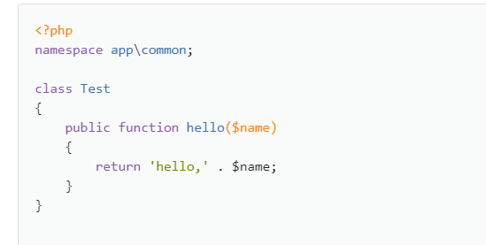
我们要调用这个类的方法就是
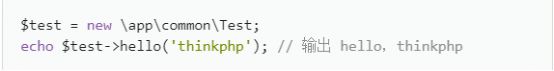
这样调用类，但是如果调用的次数多了，自己每次调用这方法都要创建类从写法上就觉得不是很好而我们更多的是想直接以静态通过类名::方法（） 的方式调用，并且开发速度不快以及不够优雅，
而如果我们使用facade模式
给这个类一个静态代理对象，然后我们就可以通过静态的方式调用
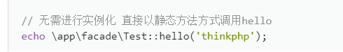
当然如上是TP5手册的例子
1.自己实践一次
首先我们可以创建一个工具类UserUtil
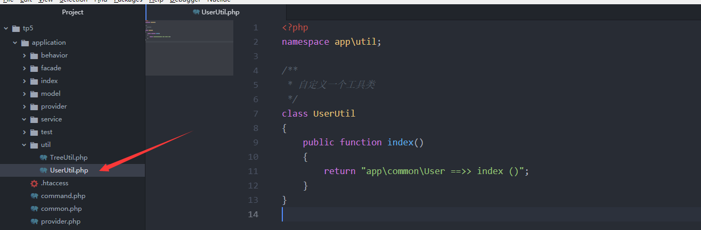
如果说我们需要使用这个类的时候，比如：在index控制器中进行调用UserUtil中的index方法
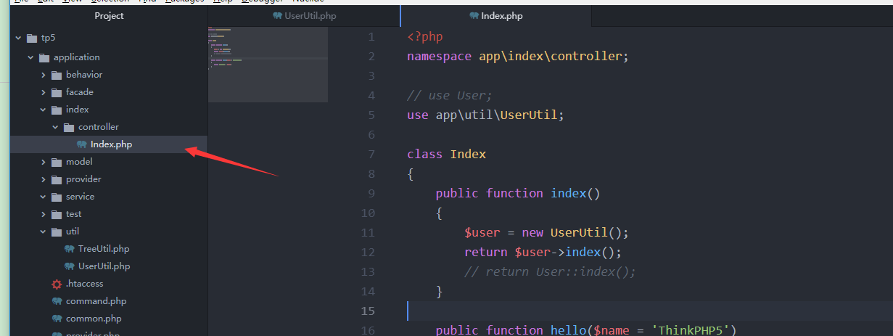
如上代码，这就是我们一般的操作方式。
这样我们就会看起来不够的优雅。我在使用的时候还需要new出这个对象，我不想new怎么办？
我们修改一下UserUtil中的index方法，用static修饰
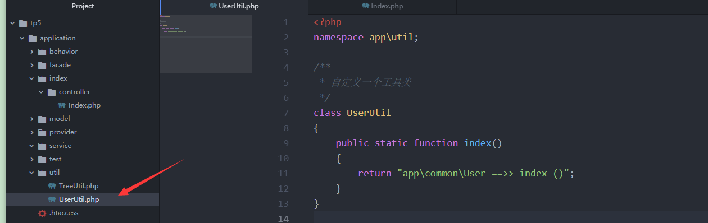
然后在控制器中，就可以通过类名的方式静态的调用了
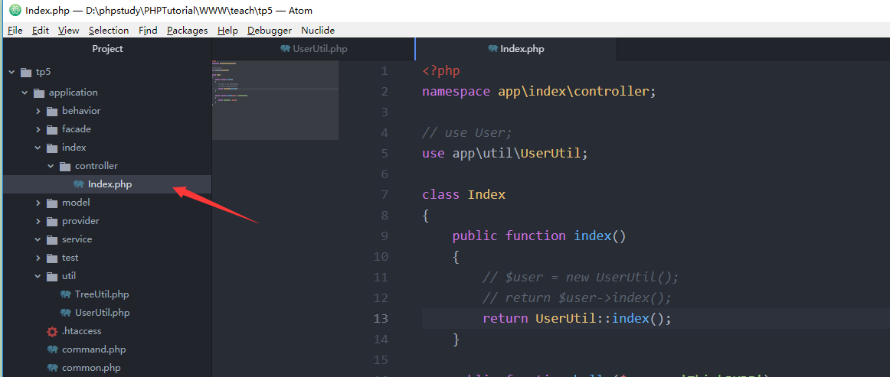
但是实际上这样并不是很好，如果说我们的UserUtil中会定义很多方法，如果说我们的Util中不止一个UserUtil，比如有TreeUtil等等其他类，这个时候我们就需要一一的给这些类定义static很明显就不够优雅，同时在内存中会一直保存这些静态属性，有很多使用其实次数不多但是也会保存很显然会占用一部分空间和资源。
其实还有一个最大的问题就是扩展和维护不强。
比如我们在做项目的时候我们在1.0版本的时候我们可能会在index方法添加很多代码，同时又有很多其他的方法，可是有一天产品经理需要改需求，这个时候你发现你定义的这个类没用了不满足这个需求的时候那么我们就只有需改源码
那么接下来我们就需要对于这个UserUtil中的方法需改，可是当需改一个类的时间比一个新建一个类的时间要多的时候最好的办法就是重写。这个时候我们可能在接下来的操作中要需改很多调用这个UserUtil的地方。肿么办？？
我们就可以使用façade作为这种类代理。
首先：我们先把UserUtil类中的index需改回来
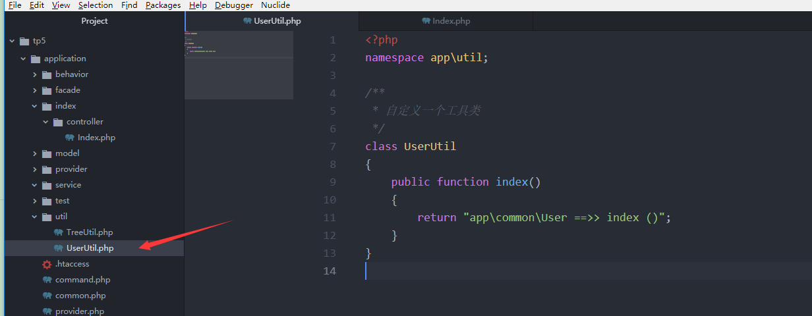
然后创建一个app\facade\UserUtil.php的门面代理类

在类中继承Facade，同时重写think\Facade类中的getFacadeClass方法
在方法中return的值就是 这个类要代理的实际类 你也可以是
return “app\util\UserUtil”;
只是那样可以显得高大上哈哈哈~~~
然后我们在控制器中使用
注意！引入的是app\facade\UserUtil
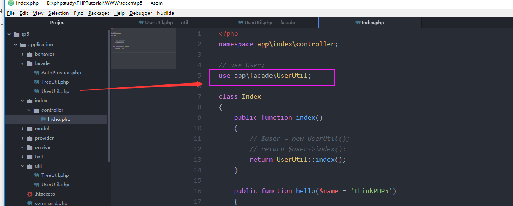
然后就成功了。
在代理类中除了重写getFacadeClass方法外还可以使用think\Facade的bind方法
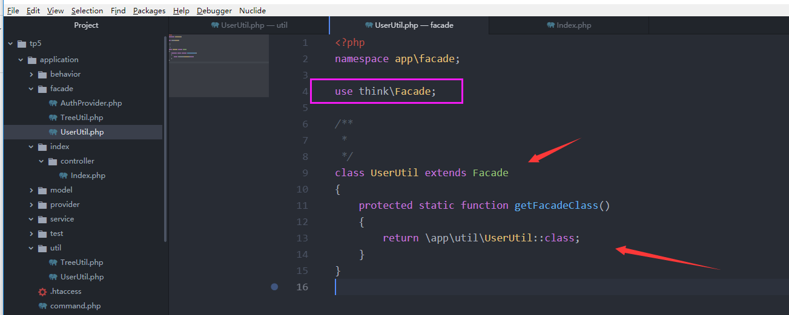
首先我们一起看一下tp5.1对于框架是怎么对于核心类库用facade代理的
打开thinkphp\base.php这个文件，就可以发现tp5.1的核心类库是通过Think\Facade中的bind方法进行了定义
同时又通过Think\Loader中的addClassAlias方法对于核心类别名注册
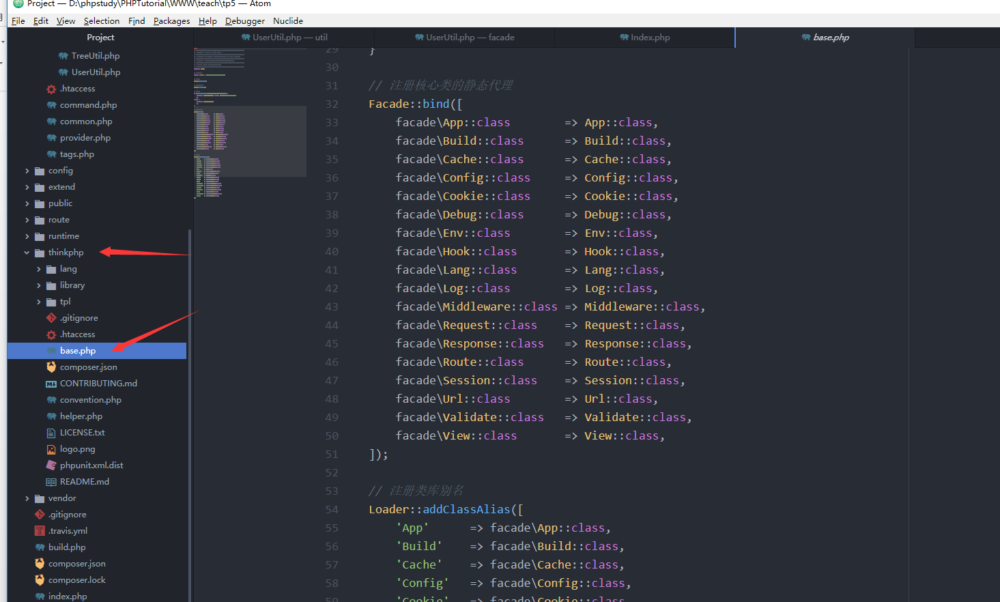
那么我们也可以模仿
首先把app\facade\UserUtil类进行处理
不重写getFacadeClass方法
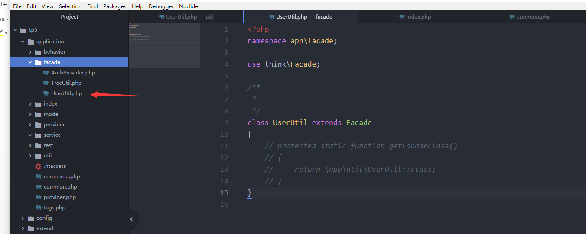
然后我们在app\common.php中写
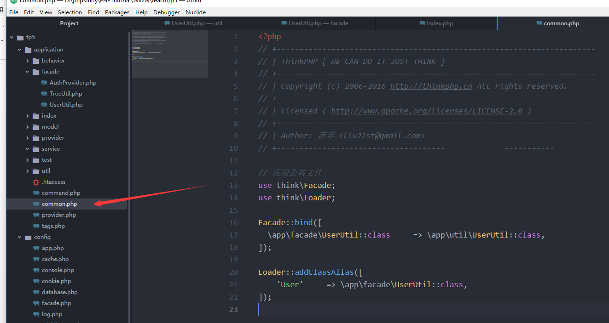
然后使用
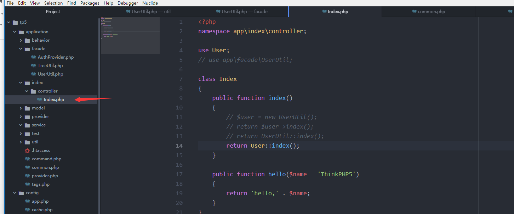
Success
2.Tp5.1解析Facade
执行User::index()时
会进入think\Facade类中
因为没有实际调用的方法这个时候执行__callStatic
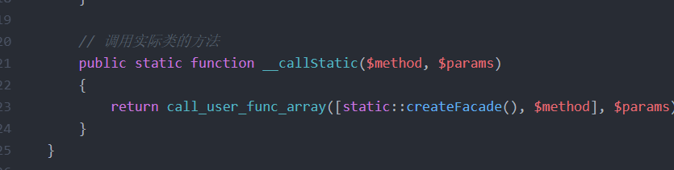
通过createFacade创建实际被代理类的实例
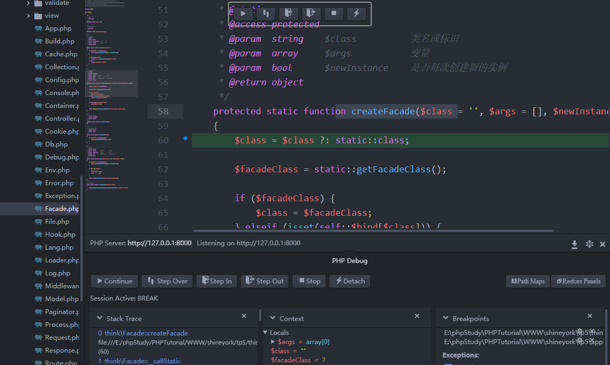
首先判断是否创建过
执行子类重写的定义被代理类的方法
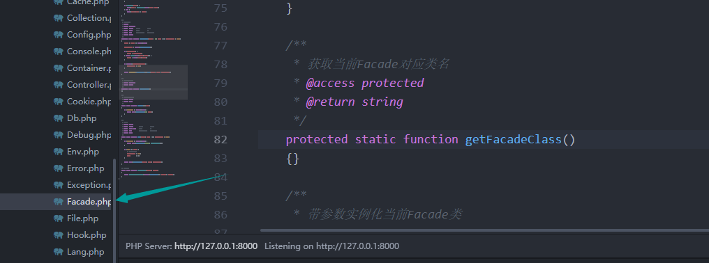
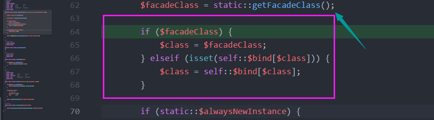
如果没有重写定义这个被代理类的地址
这个时候就检查是否被绑定
重邦定的$bind中获取实例
创建实例并执行实例的方法